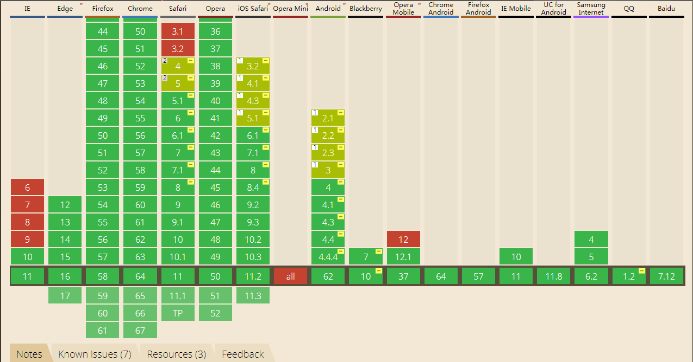

在了解用法之前先来了解一下支持性

基本上主流浏览器都支持了，IE也10往上也都支持了。
radial-gradient( [ circle || ＜length＞ ] [ at ＜position＞ ]? ,| [ ellipse || [＜length＞ | ＜percentage＞ ]{2}] [ at ＜position＞ ]? ,| [ [ circle | ellipse ] || ＜extent-keyword＞ ] [ at ＜position＞ ]? ,| at ＜position＞ ,＜color-stop＞ [ , ＜color-stop＞ ]+ )
＜position＞
＜position＞与background-position或者transform-origin类似。如缺省，默认为中心点。
＜shape＞
渐变的形状。圆形（渐变的形状是一个半径不变的正圆）或椭圆形（轴对称椭圆）。默认值为椭圆。
＜size＞
渐变的尺寸大小。包含的值见下表尺寸常数表。
＜color-stop＞
表示某个确定位置的固定色值，包含一个＜color＞值加上可选的位置值（相对虚拟渐变射线的＜percentage＞或者＜length＞长度值）。 百分比值0%，或者长度值0，表示渐变中心点；百分比值100%表示渐变射线与边缘形状相交的点。 其间的百分比值线性对应渐变射线上的点。
＜extent-keyword＞
关键字用于描述边缘轮廓的具体位置。以下为关键字常量：
常量 描述
closest-side 渐变的边缘形状与容器距离渐变中心点最近的一边相切（圆形）或者至少与距离渐变中心点最近的垂直和水平边相切（椭圆）。
closest-corner 渐变的边缘形状与容器距离渐变中心点最近的一个角相交。
farthest-side 与closest-side相反，边缘形状与容器距离渐变中心点最远的一边相切（或最远的垂直和水平边）。
farthest-corner 渐变的边缘形状与容器距离渐变中心点最远的一个角相交。
用法了解了来了解一下具体的展示效果：
demo1效果
background: radial-gradient(lightyellow, gold);
demo2效果
background: radial-gradient(circle, lightyellow, gold);
demo3效果
background: radial-gradient(at bottom, orange, yellow, green, blue, indigo, violet);
demo4效果
background: radial-gradient(cornflowerblue 0px, royalblue 80px, lightcyan 130px);
demo5效果
background: repeating-radial-gradient(at bottom, indigo, violet 10%, indigo 20%);
demo6效果
background: repeating-radial-gradient(at bottom, khaki 15%, lightyellow 30%);
demo7
background: repeating-radial-gradient(closest-side at 15px 25px, khaki 15%, lightyellow 40%);
demo8
background: repeating-radial-gradient(circle farthest-side at top left, lightyellow, khaki 15%, lightyellow 40%);
基本上这些效果就已经满足我们平时的开发需求了